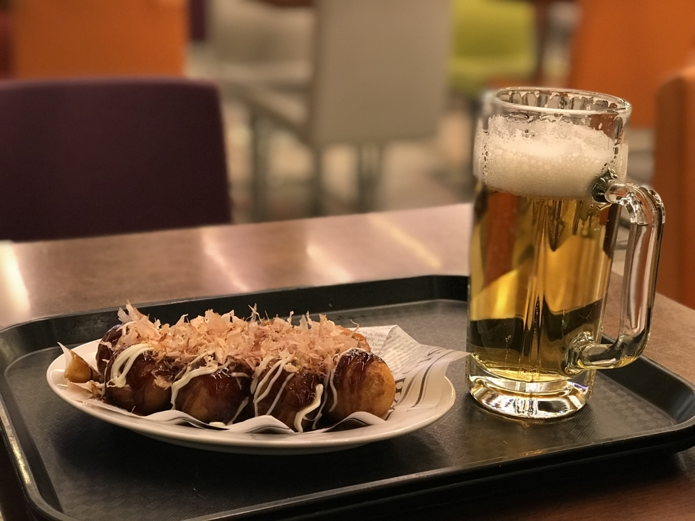

日記：Windows Insider Meetup 3＆ピーチで帰宅
執筆日時：
土曜日は、大阪で開催された「Windows Insider Meetup 3」に参加してきました。2回目は参加できなかったので、2年ぶりになるのかな？
すでに知っている内容も多かったですが、「ランゲージ コミュニティ」アプリなんかは存在を忘れていたわけで……知識を整理するいい機会になりました。プログラミングの勉強会って、出るとなんかプログラミングしたくなるじゃないですか。Windows Insider のイベントも、出るとなんかフィードバックしちゃいたくなるわけですよ。なので、定期的に開催してもらえるとモチベーションアップになっていいと思います。フィードバックって読まれてるのか心配というか、暖簾に腕押し、糠に釘？みたいな感じがあって、徒労感募りますけど、直にあってお話が聞けると、そういうのが解消されて、また「がんばろうかな」って気になるし、どういう点に気を付けてフィードバックすべきかっていう方向性も確認できていいです。
1回目に比べると、若干砕けていたというか、距離が近いというか、口をはさみやすい雰囲気なっていたのも良かったと思います。それに乗っかる形で、今回はちょっと積極的に質問をしてみましたが、おかげで日ごろ疑問に思っていたことを解消できました――わからないままのことも多少ありましたけどｗ
逆にライトニングトークは Insider MVP の方が担当する形で、一般からの参加はなし。きちんとコントロールされてる反面、「おめぇ、Microsoft さまの目の前で何抜かしてんだよ」みたいな反骨は期待できないわけで、一長一短かなって思います。あ、でも、個人的に大学で PC 必携にする話はとても面白かったです。懇親会でご挨拶して時価にお話を聞ければよかったのですが、I さんを捕まえて話を聞くのに熱中しすぎて、チャンスを逃してしまいました。残念。
あと、ついでに懇親会のご飯も食べ損ねました／(^o^)＼
最初にお寿司を2、3個つまんだだけで、気が付いたら草しかのこってなかった。まぁ、仕方ないね。むしろ、つかまりっぱなしの中の人、何も食べてないんじゃないか……大丈夫かな。
まぁ、そんな感じで、晩御飯を食べ逃したこともあって、その場で知り合った人たちで二次会もしました。なにを話したかはあまり覚えてないのですが、なにかが燃えて大変だった話などを聞いた覚えがあります。楽しかったです。ご一緒してくださった方々、ありがとうございました。*1
ちなみに、そのあとはタクシーでホテルに帰りました。タクシーの運転手に「歩いて10分で行けるがな」と言われたのですが、酔っぱらった状態でこの寒空をスーツケースひきながら最短でも10分歩けというのかコノヤローという気持ちを抑えつつ、極力笑顔で「1000円、お釣り要らんから頼むわ」とお願いして連れてってもらいました。春節？とかぶってるせいか、ホテルがあまり空いてなくてね……あんまりよさそうじゃないところを割高でとるしかないうえに、これだからなんかイヤになる。ってか、こんなにホテルが足りてない状態で万博やるというのもなんか心配だな。まぁ、別にいいんだけど。
次の日はピーチで関空から松山に帰りました。別にピーチじゃなくてもよかったのだけど、時間のある時にいろんなルートを試して感覚を養っておくのは大事だからね。今回は梅田のホテルを9時に出て、11時に保安検査まで完了。今回は関空快速を使った（はるか、乗り方わからんかったｗ）のと、一度第一ターミナルの方に行っちゃったので時間をロスしちゃったけど、LCC ターミナルが遠い＆30分前にはつかないといけないので、梅田から関空だと2時間か2時間半は見ておかなきゃいけない感じ。
久しぶりの LCC は超狭く感じたけど、飛んでるのは実質45分ぐらいだし、5000円だかそこらで連れて行ってもらえるんだからありがたい。アテンダントのお姉さんもキレイだった(ﾉｪ`*)っ)ﾀｼﾀｼ
ただ、チェックインの機械に QR コードをかざそうとするとうまくいかなくて悲しかったです。NFC に反応しちゃうのかな？ メールの画面にして iPhone をかざすと SUICA の画面になる！ キーボード入力に切り替えて予約コードを入力してしのぎましたが、スマートに通過できなかったのは結構悲しかったです。

今回はとんぼ返りだったけど、次に関西行くときは墓参りと、どこか史跡巡りぐらいしたいかな。
*1:追記 レモンをかけるべきかどうかでも議論をした！（← 思い出した